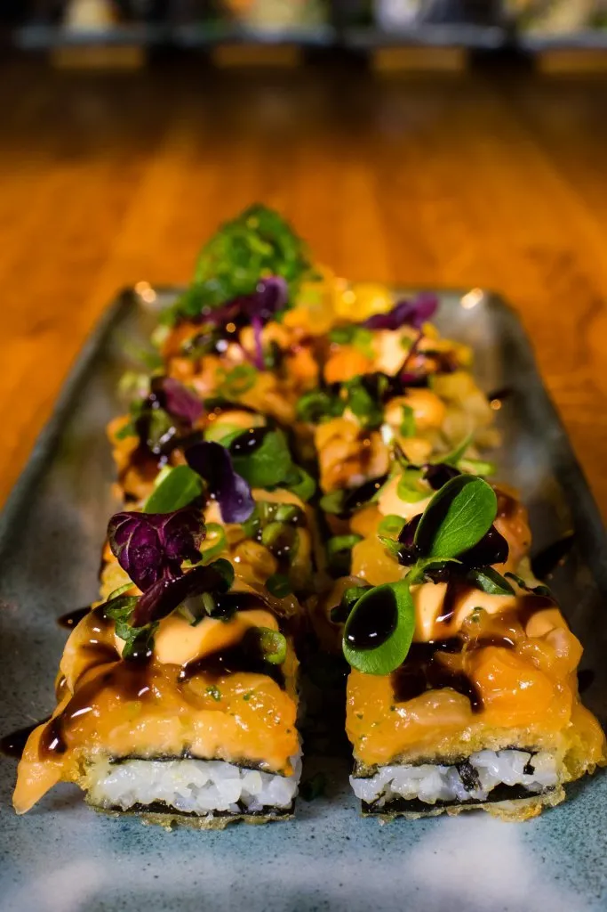
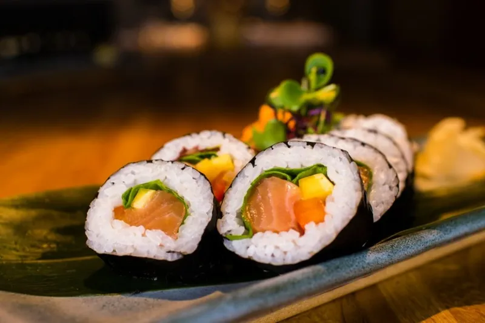
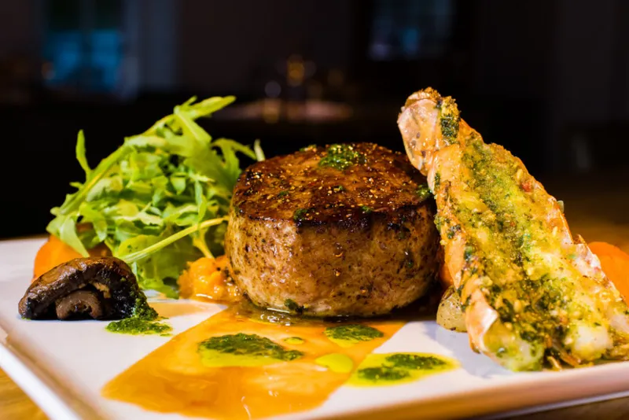

01 · kryddblanda hússins
Magic pepper
Fimm tegundir af pipar, paprika, kóríanderfræ og japönsk leyniblanda.
Eitt af ellefu kryddum sem eldhúsið vinnur með.

Kryddin okkar
Krydd, fræ og ferskar jurtir fá að móta hvert bragð. Á Rub 23 eru hráefnin nudduð upp úr sérblöndunum áður en þau fara í eldun.
01 · kryddblanda hússins
Fimm tegundir af pipar, paprika, kóríanderfræ og japönsk leyniblanda.
Eitt af ellefu kryddum sem eldhúsið vinnur með.
Þrjár tegundir af chillí, papríka, hvítlaukur, kryddjurtir og sérlöguð kryddblanda hússins.
Kardimommur, fennel, fenugreek og fleira úr ferðatöskunni.
Chillí, engifer, stjörnuanís, limelauf og fimm-krydda blanda hússins.
Garam masala, engifer, karrí, karrílauf, kóríander, negull, pan masala og limelauf.
Kóríanderfræ, sítróna, ferskur kóríander og ristaður hvítlaukur.
Ferskt rósmarín, lime, sítrónubörkur og olía.
Sérlöguð barbecue-sósa með reyktum eikarilmi.
Ferskar kryddjurtir af markaðnum, hvítlaukur og lime.
Mangósulta hússins, papaya og sæt chillí-sósa.
Sérlöguð sojasósa Rub 23, limesafi og olía.
Omakase
réttir · 16.890 kr. á mann
27.890 kr. með sérvöldum vínumréttir · 14.490 kr. á mann
22.490 kr. með sérvöldum vínumÍ omakase velja kokkarnir réttina og bera þá fram til að deila. Allir við borðið njóta því sömu máltíðar saman. Omakase er aðeins í boði fyrir allt borðið.
Af kvöldmatseðli
32 bitar. Úrval af sushi, nigiri og sushi pizzu. Aðalréttur fyrir tvo eða forréttur fyrir þrjá til fjóra.
14 bitar. Úrval af maki, nigiri og sushi pizzu.
Upphaflega sushi pizzan frá Rub 23. Bleikja, chilimajó, unagisósa og vorlaukur.
6 stk. Lax aburi, gullsporður, wagyu naut, nobashi rækja, bleikja, andalifur, túnfiskur akami.
Kaburimaki 8 stk. Humar tempura, nautaþynnur, unagisósa, magic pepper og hvítlauksmajó.
Nautalund, graslaukur, soja, hrísgrjónakex og kínahreðku-agúrkusalat.
Hörpuskel, kókos yuzu, blóðappelsína og graslaukur.
Vegan uramaki 8 stk. Tofu tempura, mangó, salat, tempura crunch og miso.
Hér er úrval af kvöldmatseðlinum, sem breytist eftir árstíðum. Skoðaðu einnig hádegismatseðil og vínseðil.


Borð á Rub 23
Bókaðu borð fyrir kvöldið í Dineout. Í hádeginu tökum við á móti gestum án bókunar.
Hafðu beint samband við okkur ef gestirnir eru fleiri en tíu.

Matreiðslumaðurinn
Matreiðslumaður ársins 2003. Síðan 2006 hefur Einar eldað árlega á alþjóðlegu sjávarútvegssýningunni í Brussel, haldið sýnikennslu við The Culinary Institute of America og eldað á sýningum í Boston og Lyon.
Rub 23 opnaði við Kaupvangsstræti 23 í júní 2008 og flutti í Kaupvangsstræti 6 í mars 2010. Við tökum á móti hópum allt að 50 manns.
Matreiðslumaður ársins.
Upphaf árlegrar þátttöku í sjávarútvegssýningunni í Brussel.
Sýnikennsla við The Culinary Institute of America; sýningar í Boston og Lyon.
Fleira hjá K6 veitingum